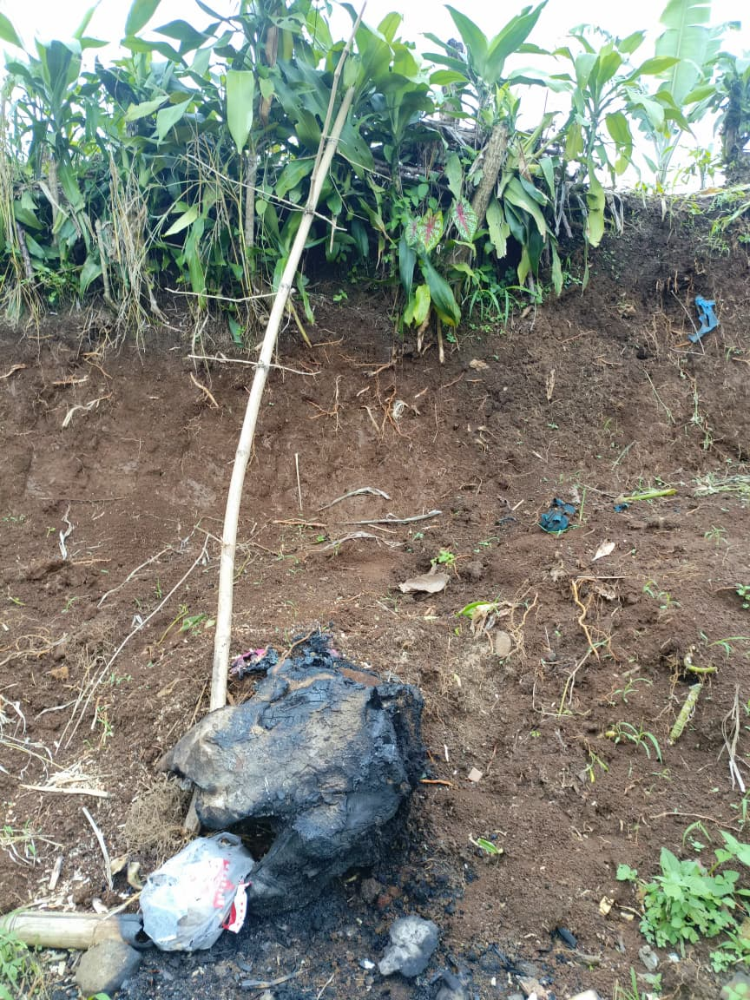

Pencemaran Tanah

Pencemaran tanah terjadi ketika zat kimia buatan manusia masuk ke dalam permukaan tanah secara langsung maupun tidak langsung. Hal ini umumnya disebabkan oleh pembuangan sampah plastik yang sulit terurai, kebocoran limbah cair industri, serta penggunaan pestisida dan pupuk kimia yang berlebihan dalam dunia pertanian.
Di bagian bawah lereng, terlihat gumpalan sisa pembakaran sampah yang berwarna hitam pekat (seperti arang atau plastik yang meleleh). Aktivitas ini meninggalkan residu kimia berbahaya yang langsung meresap ke dalam pori-pori tanah.
Masih terlihat adanya sampah plastik atau kemasan yang tidak terbakar sempurna di dekat sisa pembakaran tersebut. Plastik mengandung zat kimia sintetis yang, jika dibakar atau dibiarkan tertimbun, dapat meracuni unsur hara tanah dan mikroorganisme tanah yang seharusnya menjaga kesuburan lahan tersebut.